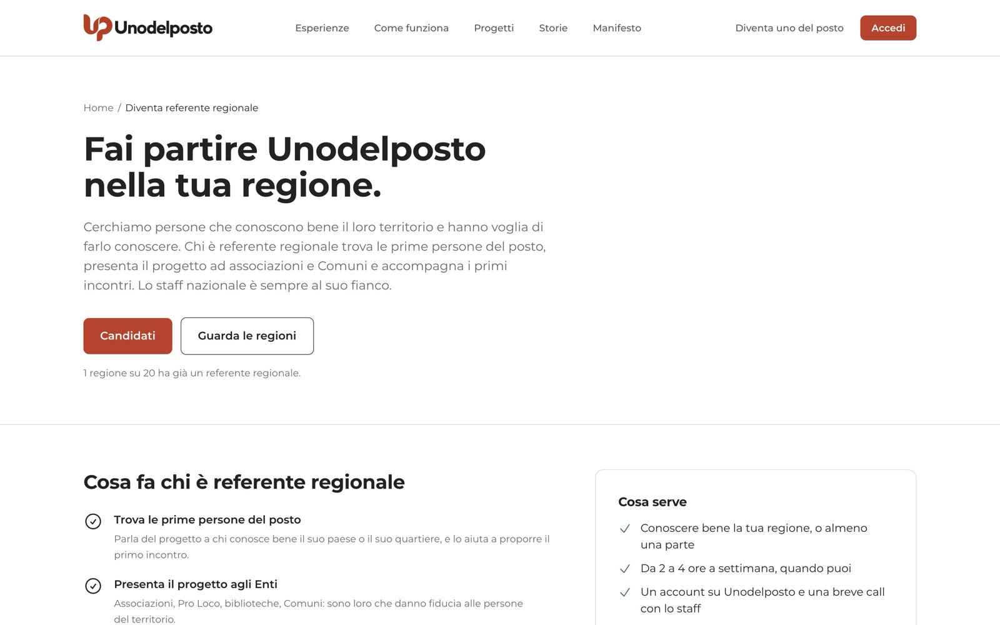
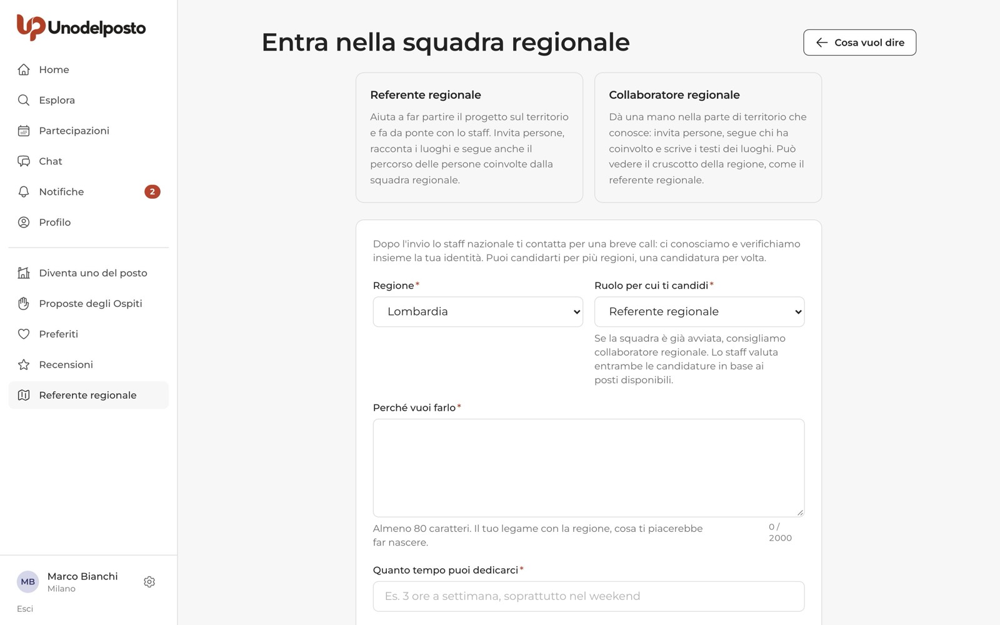
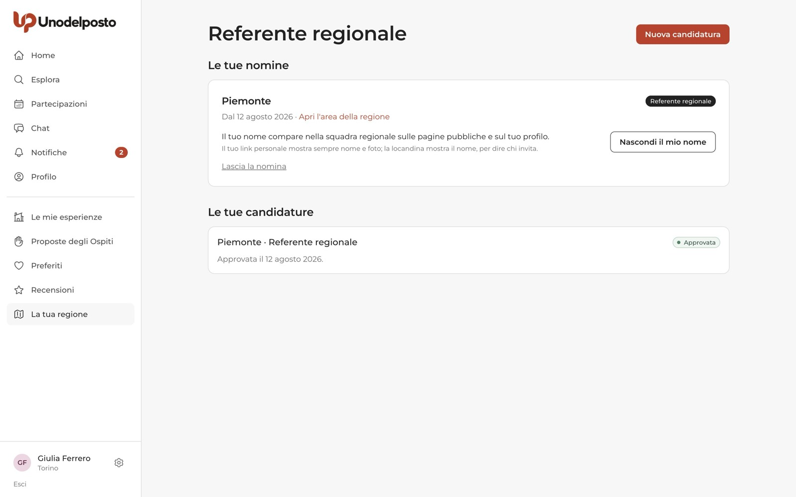
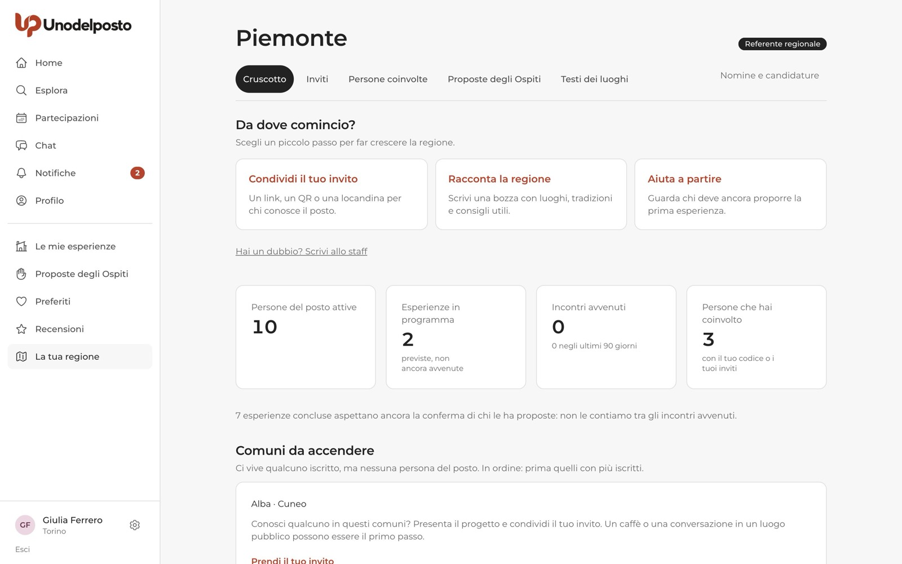
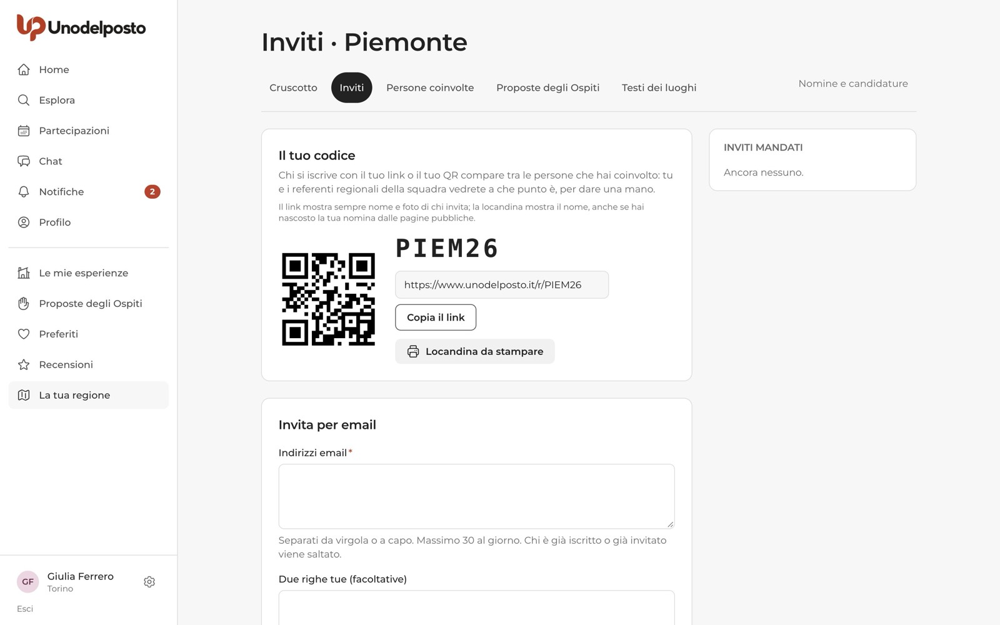
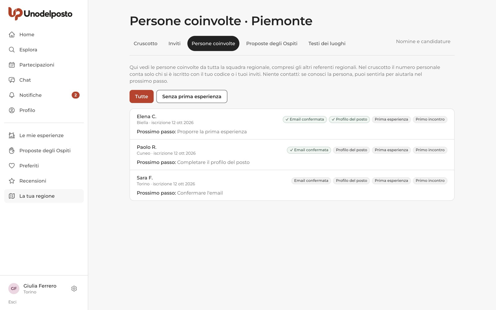
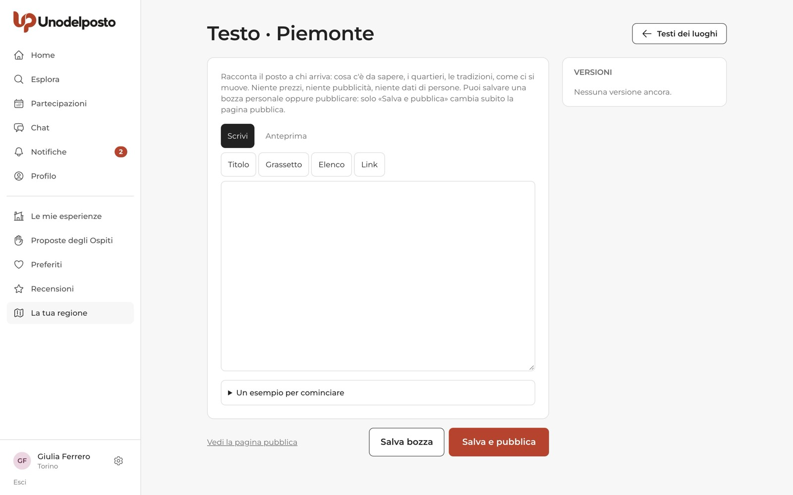

Unodelposto cresce un paese alla volta, e per farlo servono persone che conoscono il proprio territorio. La squadra regionale trova le prime persone del posto, presenta il progetto ad associazioni e Comuni e accompagna i primi incontri. Lo staff nazionale di Unodelposto è sempre al suo fianco.
È volontariato: nessun compenso, nessun denaro, come tutto il resto del sito. Chi è nella squadra regionale vede i numeri della sua regione e il percorso delle persone che ha coinvolto, ma non legge le chat, non vede i contatti e non decide da solo sulle persone.
Due ruoli
Referente regionale e collaboratore regionale. Entrambi volontari, entrambi nominati dallo staff.
Una candidatura
Un modulo breve, poi una call con lo staff per conoscersi e verificare l'identità.
Un'area della regione
Cruscotto, inviti, persone coinvolte, Proposte degli Ospiti e testi dei luoghi.
Le decisioni restano allo staff
Verifiche degli Enti, Progetti, sospensioni: decide sempre lo staff nazionale.
Se vuoi candidarti
Basta un account con l'email confermata.
Referente o collaboratore?
| Ruolo | Cosa fa |
|---|---|
| Referente regionale | Aiuta a far partire il progetto sul territorio e fa da ponte con lo staff. Invita persone, racconta i luoghi e segue anche il percorso delle persone coinvolte da tutta la squadra regionale. Al massimo 2 per regione. |
| Collaboratore regionale | Dà una mano nella parte di territorio che conosce: invita persone, segue chi ha coinvolto lui e scrive i testi dei luoghi. Vede il cruscotto della regione, come il referente regionale. Fino a 10 per regione. |
Le nomine le decide sempre lo staff, per entrambi i ruoli. Dove la squadra è già avviata, ti consigliamo di candidarti come collaboratore regionale.
La pagina pubblica
Nel piè di pagina del sito trovi la pagina Fai partire Unodelposto nella tua regione. Spiega cosa fa la squadra, cosa serve (conoscere bene almeno una parte della regione, da 2 a 4 ore a settimana quando puoi, un account e una breve call con lo staff) e cosa non è: non è un lavoro pagato, non è un modo per leggere le chat, non dà il potere di decidere da solo sulle persone.

In fondo, la sezione Le regioni mostra per ogni regione chi c'è già (chi ha scelto di comparire) e l'etichetta Cerchiamo dove manca un referente regionale. Il link di ogni regione apre il modulo già compilato con la regione e il ruolo consigliato.
Il modulo «Entra nella squadra regionale»
- Apri il modulo. Clicca Candidati. Se non hai un account, prima ti registri e confermi l'email.
- Scegli regione e ruolo. «Regione» e «Ruolo per cui ti candidi». Puoi candidarti per più regioni, una candidatura per volta.
- Racconta perché. In «Perché vuoi farlo» scrivi almeno 80 caratteri: il tuo legame con la regione, cosa ti piacerebbe far nascere.
- Indica il tempo. In «Quanto tempo puoi dedicarci», per esempio «3 ore a settimana, soprattutto nel weekend».
- Aggiungi i facoltativi. «Chi conosci sul territorio» (associazioni, Pro Loco, biblioteche, Comuni, gruppi) e come preferisci essere contattato per la call. Quest'ultimo lo legge solo lo staff.
- Accetta l'impegno e invia. Spunta le due caselle e premi Invia la candidatura.

Dopo l'invio
Nel menu compare Referente regionale. Lì, in «Le tue candidature», segui lo stato. Finché è aperta puoi ritirarla con Ritira la candidatura.
| Stato | Cosa significa |
|---|---|
| Ricevuta | Lo staff ti contatta per fissare la call. |
| In colloquio | Siete in contatto: dopo la call ricevi una risposta. |
| Approvata | Sei nominato. Trovi la nomina in «Le tue nomine». |
| Non accolta | Leggi il motivo nella stessa pagina. |
| Ritirata | L'hai ritirata tu. |
Se sei nella squadra regionale
Valido per referenti e collaboratori regionali, salvo dove è indicato.
Le tue nomine
Dopo la nomina la voce del menu diventa La tua regione. Nella pagina delle nomine vedi da quando sei nominato e trovi:
- Apri l'area della regione, per entrare nel cruscotto;
- Nascondi il mio nome o Mostra il mio nome: decidi se comparire nella squadra regionale sulle pagine pubbliche e sul tuo profilo. Il tuo link personale mostra comunque nome e foto, e la locandina il nome: servono a dire chi invita;
- Lascia la nomina: per tornare servirà una nuova candidatura.

L'impegno di riservatezza
La prima volta che entri nell'area della regione ti chiediamo di leggere e accettare l'impegno di riservatezza. Vedrai nomi, comuni e a che punto sono le persone nel sito. Ti impegni a usare queste informazioni solo per il progetto, a non copiarle né passarle a nessuno, a non cercare le persone fuori dal sito per altri motivi, ad avvisare lo staff se qualcosa va storto e a mantenere la riservatezza anche dopo la nomina. Spunta «Ho letto e accetto l'impegno di riservatezza» e premi Entra nell'area regionale.
Il cruscotto della regione
In alto trovi le schede Cruscotto, Inviti, Persone coinvolte, Proposte degli Ospiti e Testi dei luoghi, più il link Nomine e candidature.

- Da dove comincio? Tre piccoli passi: Condividi il tuo invito, Racconta la regione, Aiuta a partire (chi deve ancora proporre la prima esperienza). Sotto c'è Hai un dubbio? Scrivi allo staff.
- I numeri. Persone del posto attive, esperienze in programma, incontri avvenuti (solo quelli confermati da chi li ha proposti) e le persone che hai coinvolto tu. Le esperienze concluse ma non ancora confermate sono contate a parte.
- Comuni da accendere. Comuni dove vive qualcuno iscritto ma nessuna persona del posto, prima quelli con più iscritti. È la tua lista delle cose da fare.
- Enti e Progetti della regione, con il loro stato.
Inviti
Nella scheda Inviti trovi il tuo codice personale, il QR e il link. Chi si iscrive con il tuo link o il tuo QR compare tra le persone che hai coinvolto.

- Copia il link per mandarlo su WhatsApp o nei gruppi. La pagina del link dice chi invita e cosa troverà la persona.
- Locandina da stampare, con il QR, da appendere in bacheca, in biblioteca, al bar.
- Invita per email: scrivi gli indirizzi separati da virgola o a capo, aggiungi «Due righe tue (facoltative)» e premi Manda gli inviti. Al massimo 30 al giorno; chi è già iscritto o già invitato viene saltato.
A destra, Inviti mandati mostra per ogni invito se l'iscrizione è fatta, se è in attesa o se è scaduto.
Persone coinvolte
Per ogni persona vedi nome, comune, data d'iscrizione e quattro passi: Email confermata Profilo del posto Prima esperienza Primo incontro. Sotto c'è il prossimo passo da fare. Il filtro Senza prima esperienza mostra chi ha più bisogno di una mano.

Il collaboratore regionale vede chi si è iscritto con il suo codice o i suoi inviti. Il referente regionale vede le persone coinvolte da tutta la squadra della regione. Niente contatti: se conosci la persona, puoi sentirla tu per aiutarla nel prossimo passo.
Proposte degli Ospiti da controllare
Con la Proposta dell'Ospite è l'Ospite a scrivere cosa vorrebbe fare (per esempio un caffè o una passeggiata per capire il posto) o quale aiuto offre. Prima che parta l'avviso alle persone del posto di quel comune, qualcuno deve leggere la Proposta: lo staff o la squadra regionale. Questo vale per referenti e collaboratori regionali.

- Apri «Da controllare». Su ogni Proposta premi Leggi e decidi.
- Guarda l'attività concreta. Cosa faranno, dove, a che ora, con quali attrezzi. «Rastrellare le foglie» non è «potare con la motosega».
- Scrivi la nota e decidi. La nota la legge l'Ospite. Con Approva la Proposta si apre e parte l'avviso alle persone del posto. Con Da rivedere torna all'Ospite con la tua nota e non parte niente.
- Se serve, ritirala. Anche dopo l'approvazione puoi usare Ritira la Proposta, con un motivo: chi si era candidato viene avvisato e la chat si chiude.
Testi dei luoghi
Ogni regione e ogni comune possono avere un testo che racconta il posto a chi arriva: cosa c'è da sapere, i quartieri, le tradizioni, come ci si muove. Il testo della regione compare in cima alla pagina «Esperienze in» della regione.
- Scegli il luogo. In Testi dei luoghi premi Scrivi o Modifica per il testo della regione, oppure cerca un comune in «Il testo di un comune».
- Scrivi. Usa i pulsanti Titolo, Grassetto, Elenco, Link e controlla con Anteprima. Se non sai da dove partire, apri «Un esempio per cominciare».
- Salva bozza o pubblica. Salva bozza tiene una bozza personale che vedi solo tu. Solo Salva e pubblica cambia subito la pagina pubblica.

Ogni pubblicazione diventa una versione con il nome di chi l'ha scritta. Nella colonna Versioni puoi leggere quelle vecchie e, con Ripristina, rimetterne online una: la storia non si cancella. Se mentre scrivevi qualcuno ha cambiato il testo online, un avviso ti chiede di leggerlo prima di pubblicare.
Cosa non puoi fare
La squadra regionale istruisce e segnala, lo staff decide. In particolare:
- non vedi email, telefoni o altri contatti delle persone e non leggi le chat;
- non sospendi, non blocchi e non cancelli account o esperienze;
- non verifichi gli Enti e non approvi i Progetti;
- non fai il controllo delle esperienze della fase pilota: resta allo staff nazionale;
- non nomini né togli referenti o collaboratori: le nomine le decide lo staff, anche se puoi proporgli altre persone come collaboratori regionali.
Se qualcosa non va nella tua regione, scrivi allo staff dal link Hai un dubbio? Scrivi allo staff del cruscotto.
Domande frequenti
È un lavoro? Ricevo un rimborso?
No. È volontariato: nessun compenso. E non puoi chiedere denaro a nessuno a nome di Unodelposto.
Posso seguire più di una regione?
Sì. Ti candidi per una regione alla volta, e ogni regione è una nomina separata.
Se nascondo il mio nome, il mio invito diventa anonimo?
No. Il nome sparisce dalla squadra regionale sulle pagine pubbliche e dal tuo profilo, ma il link personale mostra sempre nome e foto e la locandina il nome: chi riceve un invito deve sapere chi lo invita.
Perché vedo poche persone in «Persone coinvolte»?
Lì compare solo chi si è iscritto con un codice o un invito della squadra regionale. Il collaboratore regionale vede solo le persone coinvolte da lui.
Che differenza c'è tra il referente dell'Ente e il referente regionale?
Sono due cose diverse. Il referente dell'Ente è chi gestisce un'associazione o un Comune sul sito. Il referente regionale è un volontario nominato dallo staff per far crescere Unodelposto in una regione.
Ti serve su carta?
La stessa guida in PDF, da stampare o inviare.